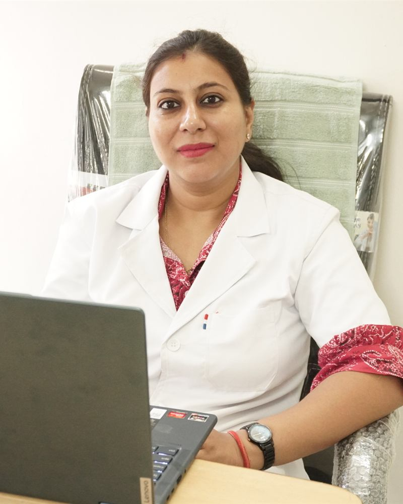

Your dentist
Dr. Disha Jain, BDS
A calm, patient dentist who believes you should understand your treatment before you agree to it.

About Dr. Jain
Dr. Jain has 13+ years of experience. She trained as a resident in Delhi government hospitals, where she treated a very wide range of dental problems, from emergency toothache to complex restorative work. She now runs her own clinic in Palam Vihar.
Patients mention how patiently she explains things. She believes in showing you what is wrong, explaining the options and their cost, and treating only what you actually need.
What she treats
- Restorative: Root canal treatment, Dental fillings, Dental crowns, Dental bridges, Dentures, Tooth extraction, Wisdom tooth removal
- Cosmetic: Teeth whitening, Dental veneers, Dental bonding, Smile design
- Implants: Dental implants
- Gum care: Scaling and polishing, Deep cleaning (root planing), Gum disease treatment
- Kids: Kids' dentistry
- Braces and aligners: Braces, Clear aligners
How she works
- Plain-words explanation of what is wrong
- Every option and its cost shown first
- Gentle technique, patient with nervous patients
- Only the treatment you actually need
Book a visit
Ready when you are.
Send your details on WhatsApp and we will reply with a time during clinic hours. In severe pain, please call us directly.